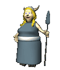

•Layers may cause you problems,
especially when you are doing a lot of cutting and pasting. If you get an error that says something
about layers, look all the way to the bottom of the Layer menu and select Merge Visible. If this doesn’t fix
your problem, ask for help.
A Final Word
